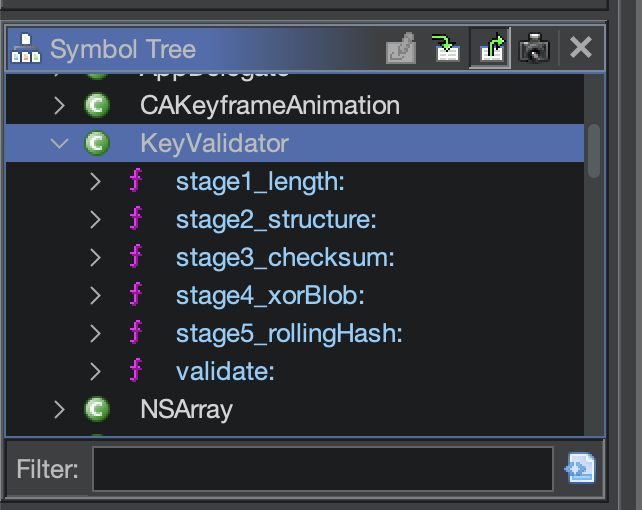
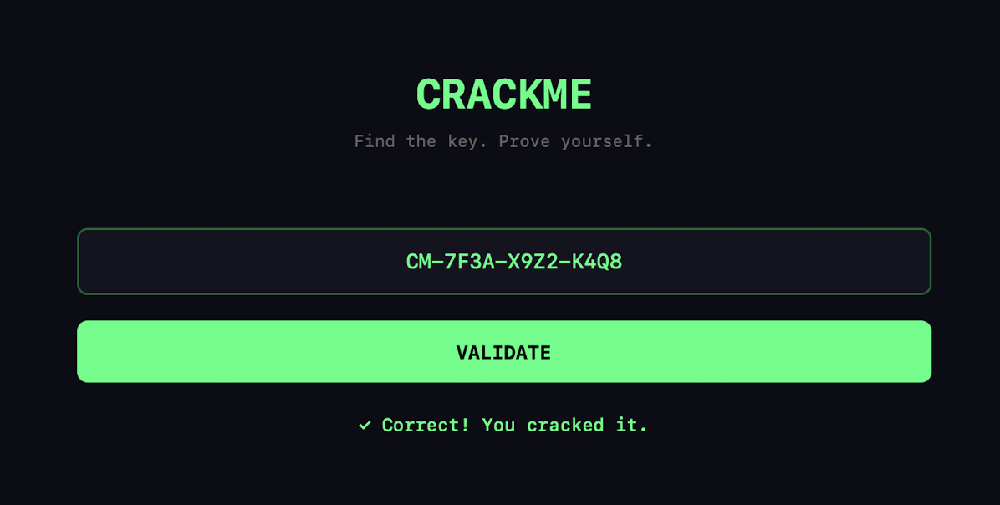

iOSCrackme.ipa is an ordinary ZIP archive. Unpacking it gives Payload/iOSCrackme.app/iOSCrackme, a 99 KB ARM64 Mach-O. LC_ENCRYPTION_INFO_64 carries cryptid = 0, so the binary is not FairPlay-encrypted and can be read straight off disk. A copy pulled from the App Store would have needed a jailbroken device and a memory dump first.
libobjc.A.dylib is linked and libswiftCore is not, so this is Objective-C. Two consequences run through everything below: method names survive in the binary as plain text, because the runtime dispatches by name, and every method carries two implicit arguments, self in x0 and _cmd in x1, which puts the first real argument in x2.
The strings gave up only the UI status texts CORRECT and WRONG, which was enough: a result string implies a function that displays it, and cross-references from there lead back into the check.
From then on I navigated by Ghidra's Symbol Tree, which lists Objective-C classes as namespaces. KeyValidator held exactly six methods, and the naming gave away the shape of the problem before a single instruction was read.
+[KeyValidator validate:]
+[KeyValidator stage1_length:]
+[KeyValidator stage2_structure:]
+[KeyValidator stage3_checksum:]
+[KeyValidator stage4_xorBlob:]
+[KeyValidator stage5_rollingHash:]
validate: is a short-circuit chain. Each stage is called in turn and its result tested with cbz, and any failure jumps straight to the common exit and returns 0.
This is what made the crackme tractable. The five constraints are independent, so they can be attacked one at a time in any order.
bl _objc_msgSend$stage1_length:
cbz w0, fail
bl _objc_msgSend$stage2_structure:
cbz w0, fail
bl _objc_msgSend$stage3_checksum:
cbz w0, fail
bl _objc_msgSend$stage4_xorBlob:
cbz w0, fail
bl _objc_msgSend$stage5_rollingHash:I started with stage4_xorBlob:, because the name suggested this was where the password gets decrypted. The assumption was simple: recover this one algorithm and the key falls out of it.
Each iteration fetches a character, XORs it with a key derived from the loop counter, and compares the result against a byte from a twelve-entry table at 0x100009221: EA 9E EF 82 E8 88 E8 81 99 FE 82 E6. The XOR key is not constant. It is index + 0xAC, so every position uses a different one, which is what keeps the table from reading as text.
I inverted the transform in Python, got a clean twelve-character string, and typed it into the app. Rejected.
add x2, x21, #4
bl _objc_msgSend$characterAtIndex:
add w8, w21, #0xac
eor w9, w8, w0
add x8, x20, x21
ldrb w10, [x8, #1]
cmp w10, w9, uxtbstage1_length: explains the rejection in three instructions: cmp x0, #0x11, so the key is 17 characters. My result was twelve, a fragment rather than the answer.
stage2_structure: then fixes the shape of those 17:
substringToIndex:3 must equal the constant string CM-characterAtIndex:7 and characterAtIndex:12 must both be 0x2D, an ASCII hyphenNSArray, which resolves through __objc_arraydata into __objc_intobj as 0, 1, 2, 7 and 12This contradicted my fragment, whose first three characters were nothing like CM-. For a while I assumed I had misread the XOR loop.
bl _objc_msgSend$substringToIndex:
bl _objc_msgSend$isEqualToString: ; "CM-"
...
mov w2, #7
bl _objc_msgSend$characterAtIndex:
cmp w0, #0x2d
b.ne fail
mov w2, #0xc
bl _objc_msgSend$characterAtIndex:
cmp w0, #0x2d
b.ne failThe contradiction dissolved on a second reading of stage4_xorBlob:. The first instruction of its loop body is add x2, x21, #4. The counter is offset by four before being used as an index, so the twelve decoded characters occupy positions 4 through 15, not 0 through 11.
One instruction, and every other constraint agreed with it. That left two unknown positions: index 3 and index 16.
index: 0 1 2 3 4 5 6 7 8 9 10 11 12 13 14 15 16
C M - ? F 3 A - X 9 Z 2 - K 4 Q ?
^--- stage2 ^--- stage4 covers 4..15stage3_checksum: sums character codes and compares the total against 0x242. The instruction that matters is add x20, x20, #2: the index advances by two, so only characters at even positions contribute. Half the key is invisible to this check.
Index 16 is even, and by this point it was the only even position still unknown. The known even characters sum to 522, the target is 578, so the missing character is 56, which is ASCII 8. No search required.
bl _objc_msgSend$characterAtIndex:
add x21, x21, w0, uxtb
add x20, x20, #2
bl _objc_msgSend$length
cmp x20, x0
b.lo loop
cmp x21, #0x242
cset w20, eqstage5_rollingHash: is an FNV-1a variant with an additive salt. The constants are recognisable on sight: 0x811C9DC5 and 0x01000193 are the standard 32-bit FNV offset basis and prime, and 0x9E3779B9 is the golden-ratio constant. Because the salt advances on every iteration, a character contributes differently depending on where it sits, which makes this a genuine whole-string check rather than another per-character constraint.
With index 16 resolved, only index 3 was left. I brute-forced it over digits and uppercase letters, and the digit 7 matched.
h = 0x811C9DC5
a = 0
for c in key:
h = ((h ^ (c & 0xFF)) * 0x01000193) ^ a
a = a + 0x9E3779B9
h == 0x7DB85890The key is CM-7F3A-X9Z2-K4Q8. Entering it in the app confirmed it, which was the only time the binary was executed. The solver below contains no search at all, for reasons covered in the next section.
blob = [0xEA, 0x9E, 0xEF, 0x82, 0xE8, 0x88, 0xE8, 0x81, 0x99, 0xFE, 0x82, 0xE6]
key = ["?"] * 17
key[0], key[1], key[2] = "C", "M", "-"
key[7] = key[12] = "-"
key[3] = chr(0x37)
for i in range(12):
key[i + 4] = chr(blob[i] ^ ((i + 0xAC) & 0xFF))
known_sum = sum(ord(key[i]) for i in range(0, 16, 2))
key[16] = chr(0x242 - known_sum)
candidate = "".join(key)
def rolling_hash(text):
mask = 0xFFFFFFFF
state = 0x811C9DC5
salt = 0
for char in text:
state = (((state ^ (ord(char) & 0xFF)) * 0x01000193) & mask) ^ salt
salt = (salt + 0x9E3779B9) & mask
return state
print(candidate, rolling_hash(candidate) == 0x7DB85890)
The brute force in stage 5 was unnecessary. stage4_xorBlob: opens by testing index 3 against a constant, before its loop even starts, and 0x37 is 7. The character I searched for was sitting three instructions above the loop I had read line by line.
The lesson is about ordering rather than attention. Collect every direct constraint first, then search only what remains. Done that way this crackme needs no search anywhere: stage 2 fixes positions 0, 1, 2, 7 and 12, stage 4 fixes 3 through 15, stage 3 computes 16 arithmetically, and stage 5 is left with nothing to do but agree.
bl _objc_msgSend$characterAtIndex: ; index 3
and w8, w0, #0xff
cmp w8, #0x37
b.ne failThe binary contains an AntiDebug class I only looked at after solving the challenge. It asks whether a debugger is attached in three independent ways: ptrace with PT_DENY_ATTACH, resolved through dlsym so that _ptrace never appears in the import table and the call becomes an indirect blr; a sysctl query for the process's own kinfo_proc, testing the P_TRACED bit of p_flag; and a watchdog dispatched at launch that repeats the second check every 2.5 seconds and calls exit(1) on a hit.
None of it had any effect here, because the binary was never run under a debugger. Anti-debugging sits perpendicular to static analysis: it raises the cost of the dynamic approach and leaves the cost of reading the file exactly where it was.
Three things I am taking out of this one.
cmp I walked past.